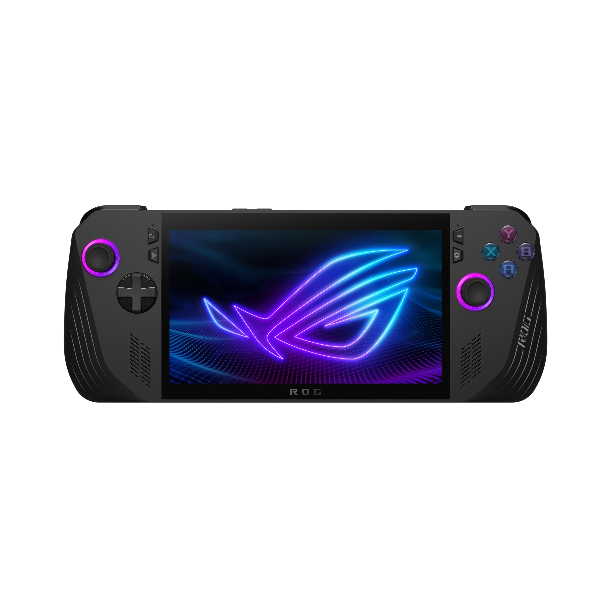

899,99 €
L'ASUS ROG Ally X est une console portable puissante sortie en 2024, équipée d'un processeur AMD Ryzen Z1 Extreme et d'un GPU Radeon RDNA 3. Elle embarque 24 Go de RAM, un SSD de 1 To et un écran tactile Full HD 120 Hz de 7 pouces. Sous Windows 11, elle permet de jouer à de nombreux jeux PC partout. Autonomie : ~2h30 de jeu. Poids : 685 g.